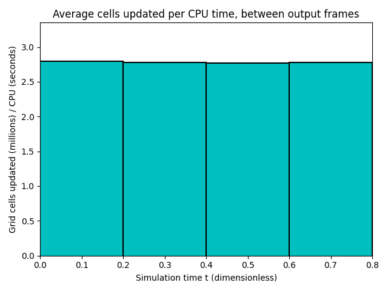

Datetime: 2021-01-17 12:45 From: /Users/rjl/clawpack_src/clawpack_master/amrclaw/examples/euler_2d_quadrants/_output
============================== Timing Data ==============================
Integration Time (stepgrid + BC + overhead)
Level Wall Time (seconds) CPU Time (seconds) Total Cell Updates
1 0.250 0.249 0.152E+06
2 4.692 12.850 0.765E+07
3 94.684 277.521 0.167E+09
total 99.627 290.620 0.175E+09
All levels:
stepgrid 98.718 288.335
BC/ghost cells 0.846 2.218
Regridding 0.563 1.165
Output (valout) 3.811 3.719
Total time: 104.334 296.071
Using 3 thread(s)
Note: The CPU times are summed over all threads.
Total time includes more than the subroutines listed above
Note: timings are also recorded for each output step
in the file timing.csv.
clock_rate = 1000000000 per second, count_max = 9223372036854775807
clock_start = 1610916180093893000, clock_finish = 1610916284436977000
=========================================================================


